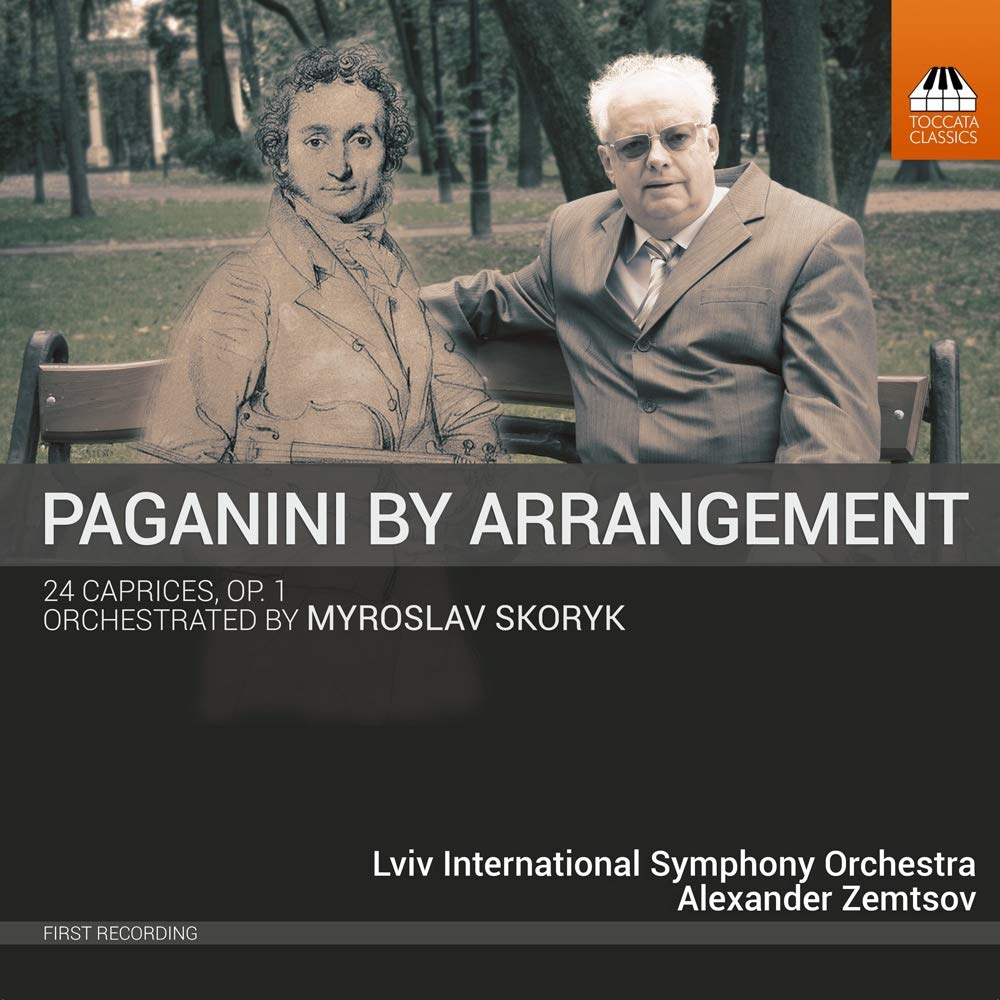
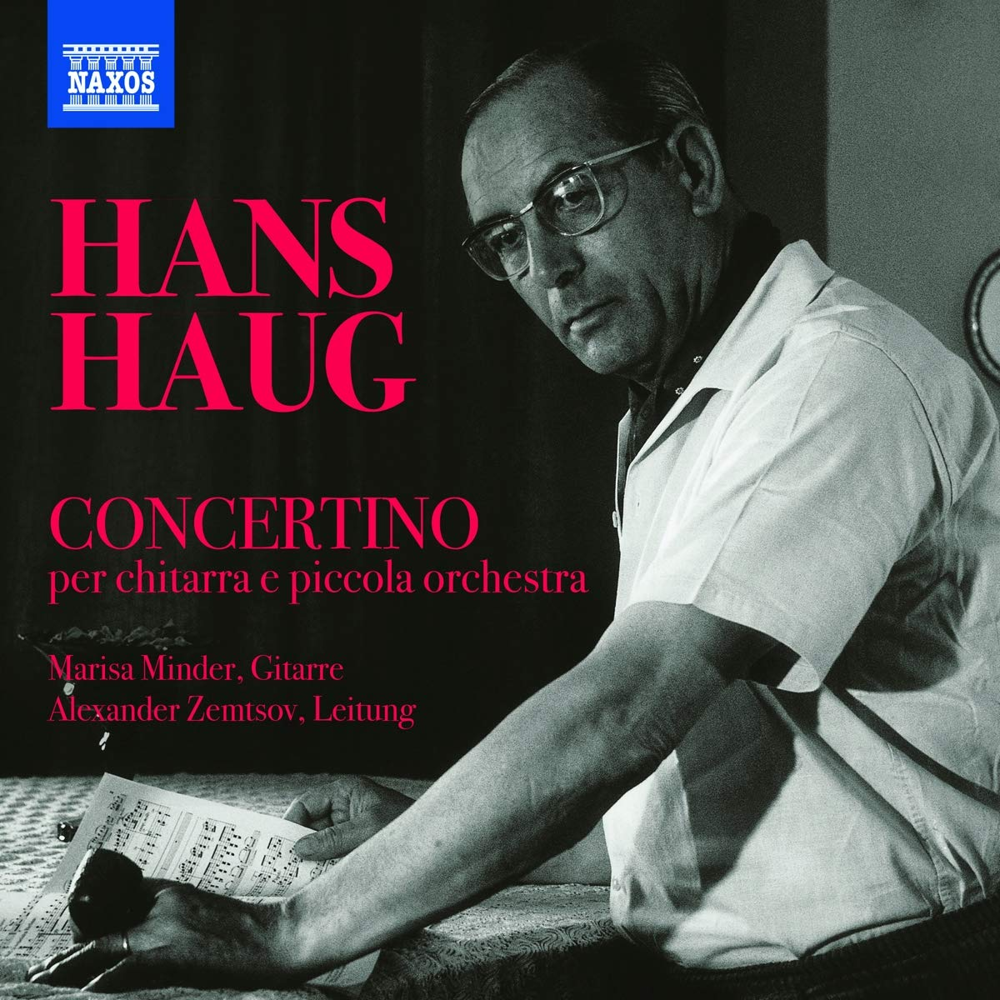

RECORDINGS


INSO LVIV ORCHESTRA
Paganini Skoryk Caprices

CHAMBER ORCHESTRA BASEL PHILHARMONIC QUINTET
Marisa Minder, Guitar
Hanns Haug – Concertino
ALEXANDER
GORDON
CONDUCTOR
Alexander Gordon has achieved considerable international recognition as a soloist,
conductor, chamber musician and teacher.
Following the Russian invasion of Ukraine in 2022, Alexander changed his family name from Zemtsov to
Gordon, protesting against Russian aggression and the use of the letters “Z O V” as symbols of
Vladimir Putin's regime.
Following a successful career as a viola player, including taking on the position of Principal Viola
of the London Philharmonic Orchestra at the age of 23, Gordon made his conducting debut with the
Finnish Lappeenranta Symphony Orchestra in 2014. He has developed his reputation as a sought-after
conductor working with the Bulgarian National Radio- Symphony Orchestra, the Mannheim Chamber
Orchestra in Germany, the National Opera of Ukraine, the Sofia Philharmonic Orchestra, and the
London Philharmonic Orchestra.
As conductor, he has collaborated with many of the world’s finest musicians including Mischa Maisky,
Simon Trpceski, Roman Simovic, Boris Garlitsky, Gordon Nicolic and Tabea Zimmermann.
In 2016 Alexander Gordon was appointed artistic advisor and conductor of the International New
Symphony Orchestra (INSO) in Lviv, giving this multinational German-Russian-Ukrainian-Jewish
musician the role of an “Ambassador of Peace” in Ukraine. His recording with INSO Lviv on Toccata
Classics of 24 Caprices by Paganini orchestrated for Symphony Orchestra by Ukrainian composer
Myroslav Skoryk was ‘highly acclaimed’ by BBC Radio 3’s CD Review.
A dedicated chamber musician Alexander Gordon has regularly performed with Misha Maisky, Dmitri
Sitkovetsky, Gerhard Schulz, Peter Donohoe, Natalia Gutman, Totlief Thedeen, Eldar Nebolsin,
Maximilian Hornung, Pascal and Michel Moragues, Gordan Nikolic, Roman Simovic, Patrick Gallois,
Jan-Erik Gustafsson as well as with Utrecht and Schumann String Quartets.
He has also performed regularly as a soloist in Europe, the USA, Asia and Australia under conductors
such as Neeme Jarvi, Vladimir Jurowski, Leif Segerstam, and Jukka-Pekka Saraste and Alexander
Vedernikov.
Born in 1978 into a family of musicians Alexander Gordon completed his diploma HfMT Hamburg with
Marius Nichiteanu, Master's studies at ZUYD in Maastricht with Michael Kugel and as a postgraduate
with Tabea Zimmermann at the Hochschule Hanns Eisler in Berlin. He completed his Masters in
Conducting at the ZUYD with Vassily Sinaisky. He took inspiration from masterclasses with his
mentors Kirill Petrenko, Jukka-Pekka Saraste, Vladimir Jurowski, Neeme, and Paavo Jarvi.
Gordon has won numerous prizes and awards including International Competition "Classical Legacy" in
Moscow (First Prize, 1995), Elise Meyer Competition in Hamburg (First Prize, 1997), Brahms
Competition in Poertschach, Austria (First Prize, 2001)
Alexander Gordon teaches at a number of European conservatoires including the Guildhall School of
Music and Drama in London, the Vienna Konservatorium. He is currently professor at the Haute École
de Musique de Lausanne and the Hochschule für Musik und Tanz in Cologne.
He began his professional music-making career as principal viola with the London Philharmonic
Orchestra at the age of 23. As violist he has recorded for Chandos, LPO Live, Navis Classics, Naxos
and Toccata Classics. He has conducted recordings for Toccata Classics and Naxos.
“Alexander Gordon is a musician of high talent and strong persuasion”
KURT MASUR
A recording contract between Toccata Classics London and Alexander Gordon as a conductor has started in
2017.
As soloist Alexander Gordon appeared in the most recognised concert halls performing regularly under
conductors such as Neeme Jarvi, Vladimir Jurowski, Leif Segerstam, Alexander Vedernikov, Jukka-Pekka
Saraste
in Europe, USA, Asia and Australia.
Alexander Gordon has numerous recordings for Chandos,LPO Live, Navis Classics, Naxos and Toccata
Classics.
He appears regularly on TV and Radio.
Born in 1978 into a family of musicians – now a renowned viola dynasty – Alexander Gordon attended the
class of Elena Ozol at the Gnessin Music School for Gifted Children in Moscow. He continued his
education
with Marius Nichiteanu, Michael Kugel and Tabea Zimmermann in Germany. He studied conducting with
Vladimir
Jurowski and Vassily Sinaisky and is taking inspiration in masterclasses from his mentors Kirill
Petrenko,
Jukka-Pekka Saraste, Kurt Masur, Leif Segerstam, Neeme and Paavo Jarvi.
INSO LVIV ORCHESTRA
Paganini Skoryk Caprices
CHAMBER ORCHESTRA BASEL PHILHARMONIC QUINTET
Marisa Minder, Guitar
Hanns Haug – Concertino
Wed, 18 May 2022 20:00
LAEISZHALLE GROSSER SAAL
Hamburger Camerata
Joanna Kamenarska violin
conductor Alexander Gordon
ORCHESTRA
20 October 2021
L'Auditori de Barcelona 19:30
LONDON PHILHARMONIC
ORCHESTRA
19 October 2021
LONDON PHILHARMONIC
ORCHESTRA
Auditorio National Madrid
14 October 2021
Pori Sinfonietta
Promenadisali 19:30
11 July 2021
Burgas opera
Philarmonic Orchestra
Summer Stage Burgas
10 March 2021
Sofia Philarmonic
Orchestra
Bulgaria Hall
20 March 2021
State Academy Symphony
Orchestra Moscow
Tchaikovsky Hall
Moscow
26-28 April 2021
London Philarmonic
Orchestra
Vladimir Jurowski
Asst Cond Alexandr Gordon
22-24 April 2021
London Philarmonic
Orchestra
Vladimir Jurowski
Asst Cond Alexandr Gordon
19-21 April 2021
London Philarmonic
Orchestra
Vladimir Jurowski
Asst Cond Alexandr Gordon
1-8 August 2020
LEAD! ACADEMY FOR
CONDUCTORS AND
SOLOISTS
FISKARS SUMMER
FESTIVAL
05 May 2020
NAXOS CD Label
NEW CD Release
19 March 2020
Pori Sinfonietta Finland
06 February 2020
National Opera of Ukraine
Kyiv
06 February 2020
National Opera of Ukraine
Kyiv
06 October 2019
Royal Concertgebouw,
Amsterdam, The Netherlands
04 October 2019
Utrecht, Netherlands
17-27 August 2019
Aurora and Lead! Viola
Mentoring
Conducting Assistance for J P
Saraste
Stockholm and Trollhatten
Sweden
22-25 July 2019
Concerts
Schloss Hohenprissnitz,
Germany
Taurida Orchestra St Petersburg
Conducting Academy Vassily
Sinaisky
11-20 July 2019
Parnu Music Festival
Jarvi Academy
Tallinn, Pärnu Estonia
27 March 2019
Lviv Philharmonic Hall
24 January 2019
Energiaa Beethovenista I
Zemtsov & Viola
Promenadisali Pori Finnland
18 December 2018
Bulgaria Hall Sopfia
Gordon & Viola
Promenadisali Pori Finnland
16 December 2018
OZM Dortmund Germany
27 January 2017
Bulgaria Hall Sofia
“Perhaps the exceptional viola
solos of Alexander Zemtsov in the
“Ballad of the King of Thule”
merit a spotlight of their own”
“Energetic and emotional…. The ensemble
played consistently compact, intense, and
lively, exposed
contrast effects, accents
and dynamic nuances…The performance
at a remarkable level under Alexander
Zemtsov…. “
Тhe London Philharmonic Orchestra,
returns to the stages of Spain, this time,
under the baton of conductor Alexander
Zemtsov